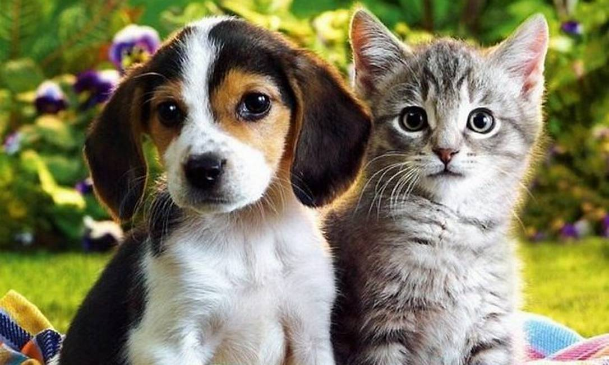

Em uma cidade marcada por indiferença e abandono, nasceu o ANIMANAUS, um projeto que não só salvou vidas, mas também transformou a maneira como as pessoas enxergam os animais. Tudo começou com um pequeno grupo de voluntários apaixonados, que, armados apenas de amor e dedicação, se lançaram em uma missão para resgatar animais das ruas da cidade.
Eles não tinham recursos, mas a necessidade era grande. Cada cão abandonado, cada gatinho perdido, era um chamado para a ação. Sem abrigo, sem comida, e sem um futuro, os animais estavam à mercê da sorte. Mas, para os fundadores do ANIMANAUS, não existia outra opção. "Nós não podemos deixar que esses animais morram sozinhos", disseram.
As dificuldades foram muitas. O apoio da comunidade era escasso, as noites passavam em claro, e o medo de não conseguir mais resgatar nenhum animal era constante. Mas, em cada história de superação, em cada vida salva, eles encontraram forças para continuar. Um cão adotado, um gato acolhido, tudo isso alimentava a chama da esperança.
Aos poucos, o ANIMANAUS se consolidou como uma referência. Não era apenas um abrigo, era um símbolo de resiliência. Com o tempo, mais voluntários se uniram ao projeto. Pessoas com histórias de vida semelhantes, que entenderam a dor dos animais e que se viam em cada um deles. O projeto foi crescendo, mas nunca perdeu sua essência.
Mas as dificuldades não acabaram. A cada resgaste, o desafio se renovava. As histórias de abandono eram ainda mais duras do que se imaginava. Muitos animais chegaram ao ANIMANAUS em estados críticos de saúde, sem esperança alguma. Mas, com o tempo e com a ajuda de profissionais, todos começaram a se recuperar.
O ANIMANAUS não é apenas sobre salvar animais. É sobre dar esperança a seres que foram esquecidos, sobre mudar a vida de famílias inteiras através da adoção e sobre criar uma rede de apoio onde todos se importam. Com amor, cada dia é uma nova oportunidade para fazer a diferença.
E assim, o ANIMANAUS segue em frente, enfrentando novos desafios, mas sempre com a certeza de que, enquanto houver um animal necessitado, a missão estará longe de ser concluída. O trabalho continua, a luta nunca termina. Porque, no fim, a transformação começa com um pequeno gesto de amor.
O ANIMANAUS, mais do que um abrigo, é uma esperança para todos aqueles que acreditam que é possível salvar um animal e transformar vidas. Esse é o nosso compromisso, essa é a nossa história.
Transforme uma vida e faça parte de um movimento que conecta tecnologia e empatia.
Saiba MaisAnimais Resgatados
Adoções Realizadas
Voluntários Ativos